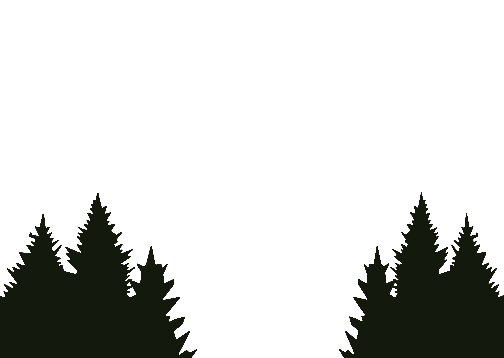
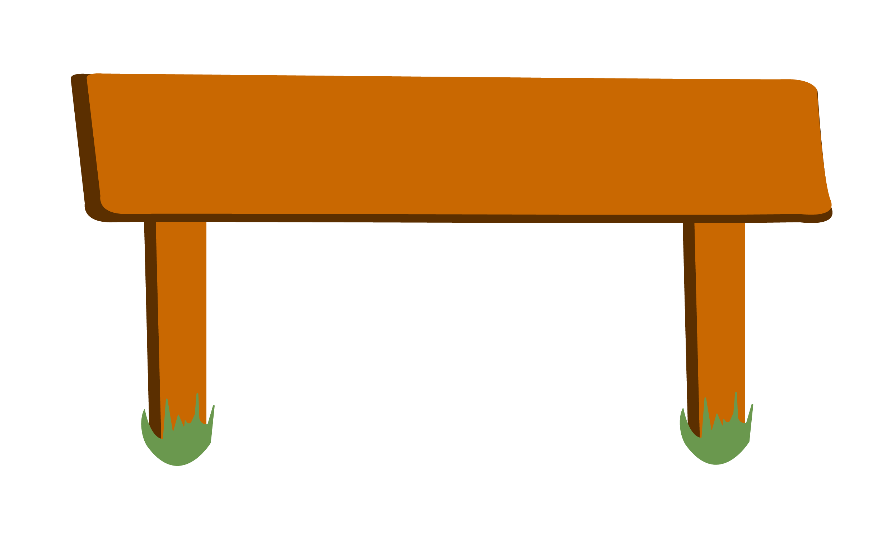

I’ve hiked many times. I know how to pack my bag so nothing rattles and the weight is even. I know how the trail markers work, which symbols mean water, which ones mean elevation. I know how to pitch a tent so it won’t blow away and how to arrange camp so everything is visible and orderly. Nothing here surprises me, I’m comfortable.
The ground is solid, the path marked. This is what working with HTML and CSS feels like.
HTML is the land itself - the placement of things, the structure of the campsite.
CSS is how everything looks and feels, spacing, color, hierarchy, comfort...
Once they’re set, they stay.
As long as nothing changes - no weather shift, no unexpected fork, no voice calling my name. I can believe that knowing the terrain is the same as understanding the system.
Right!
...right?
“Wait...That Wasn’t On The Map!”
An interactive scrollytelling story that explains my journey of learning JavaScript, through the lens of a hiker....


Opening
First Contact
console.log
Before I decide anything, I pause. I check the map, trail marker. I have this urge to say where I am at, and where I am going, out loud. I just can’t place why!
This was my first encounter with console.log. I know what I am doing, I have a strong feeling it’s important. But why am I doing it?
The answer is so that I know all the necessary information the hike can offer me, and develop my situational awareness!
This translates to console.log because if you don’t have an idea of what you’re working on, and how to access that information, you’re lost! You aren’t able to find mistakes in your code!
If I dont know where I’m starting a hike, or where I’m ending. I’m just wandering aimlessly through the park.
Naming Things
variables
I begin my hike with only what I can carry. My backpack, water bottle, tent, towel, toilet paper, etc. These are the things I am holding onto! I have to keep track of them so they can be used most efficiently!
These are variables. Just like I understand the importance of naming and remembering the name of my water bottle, the same concepts apply to variables in JavaScript. Named things store values. Like how remembering that ‘water bottle’ stores water so I can stay hydrated.
It’s important to understand what your variables are holding... so you can use them! They can change, but only if I notice them and track them clearly!
The Switch
conditionals
As I am hiking, I realize I should do a check. But i’m scarred, what if I am out of water? What if the weather IS bad? The only way to find out is to check!
Do I have water? Is there storm clouds in the sky?
This emulates my initial interaction with conditionals. I was scarred because they seemed like a different language! But once I realized that the only way out is through. I began to understand, that lesson learned itself is a conditional.
If my water is low, I find water. If it’s not, I continue on. If the weather turns bad, I find shelter. These are my conditionals. Bad conditionals get hikers hurt or lost!
JavaScript evaluates the circumstances, and responds. It asks, “Given my current state, what is allowed right now?”. It doesn’t consider the possibility of any option other then what is has access to. Bad conditionals in JS break experiences.
The code doesn’t act blindly. It checks the situation, then chooses a path.
Listening
addEventListener
The trail doesn’t stay quiet for long...
A fork appears. The sun sets. My heel starts to blister. None of these moments tell me what to do...but they demand attention.
The environment taps me on the shoulder and says: “Respond!”
These are events. They dont make decisions, nothing happens by default. The listener just stands there, attentive.
The Memory
localStorage
I finally make it to camp for the night! I did it! I remember all the tricks I picked up along the way!
- Loose log on the bridge 4 miles in.
- Bring more toilet paper next time...
- Avoid sitting on the fallen tree near camp (it had ants!).
- Etc.
I don’t forget everything when the day ends! I remember everything important that I picked up along the way!
In JavaScript, this is localStorage. What stays with you after the page reloads. Variables tell me what is true right now. Memory tells me what stays true over time.
This is valuable because just like remembering the most efficient route of a hike, JS uses localStorage to remember the important stuff, so next time, your choices are noted.
Closing
As I hike the last stretch out, something shifts. The trail isnt just a path anymore. Its a system that listens, decides, remembers, and respionds.
Like a backpacking trip. A website isn’t static. It’s alive. Attentive to change. Guided by rules and shaped by memory.
Once you see it that way, you stop wanting to be comfortable. You start waiting for the next adventure!
You start designing websites that know how to think.